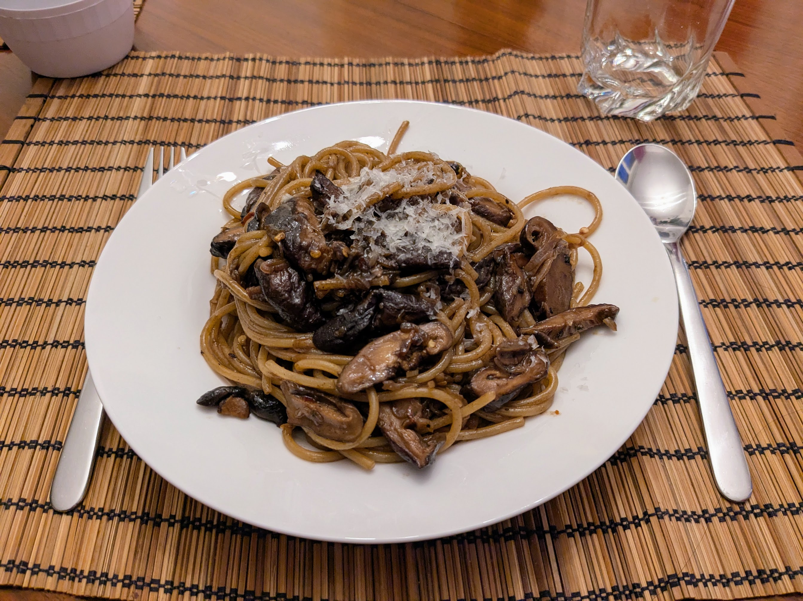

Pâtes à l'ail noir

Pour 2 personnes :
- 250g de pâtes, par exemple des spaghetti
- 60g de beurre
- 4 gousses d'ail noir (environ 15g)
- Trois échalotes
- 150g de shiitake frais, ou sinon de champignons standard
- Une demi-cuillère à café de flocons de piment
- Un peu de parmesan
- Mixer ensemble l'ail noir et le beurre. Il faut un tout petit mixeur pour que ça marche bien, si on en a pas, on peut utiliser plus de beurre et d'ail noir, et congeler le reste pour plus tard.
- Éplucher et couper les échalotes en tranches fines, les faire revenir dans une poêle avec un peu d'huile d'olive.
- Pendant ce temps, couper les champignons en tranches, et les ajouter dans la poêle. Il faut que le tout brunisse.
- Faire cuire les pâtes une minute de moins qu'indiqué sur le paquet. Réserver un verre d'eau de cuisson des pâtes, égoutter le reste.
- Mélanger les pâtes, le contenu de la poêle, le beurre d'ail noir, et les flocons de piments au fond de la casserole. Ajouter l'eau de cuisson au fur et à mesure en mélangeant bien pour que ça forme une sauce qui adhère bien aux pâtes.
- Servir chaud avec un peu de parmesan.